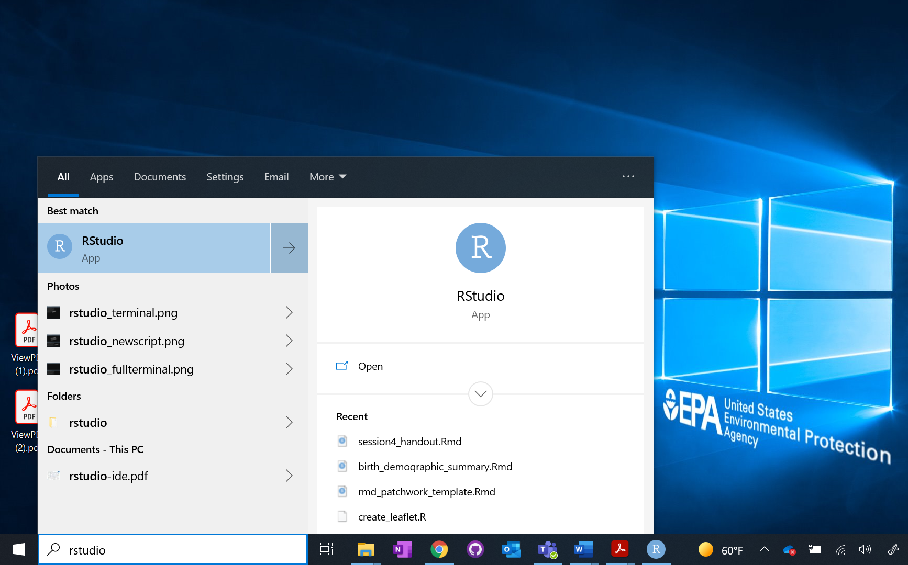
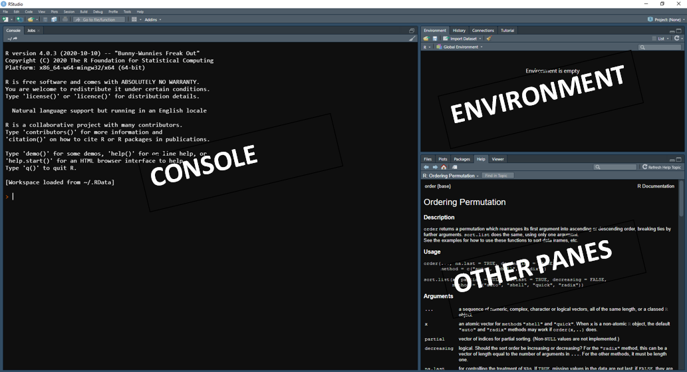
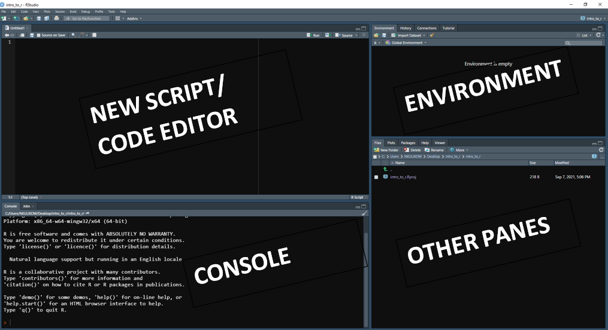
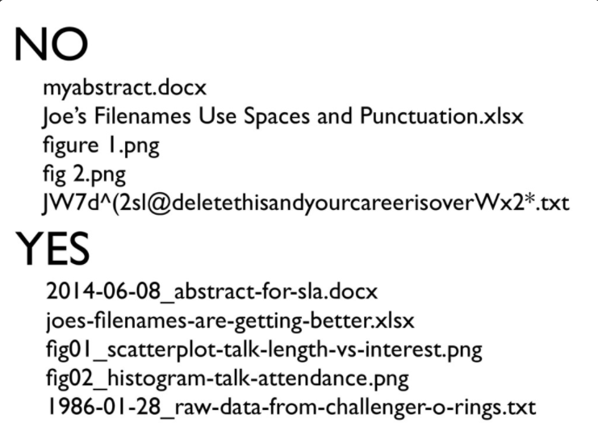

library(knitr)Warning: package 'knitr' was built under R version 4.2.3library(knitr)Warning: package 'knitr' was built under R version 4.2.3Let’s start by writing our first code! We will be using RStudio throughout this course. Start by launching RStudio.
Note- If you don’t know where RStudio was installed, simply type it in the Search Bar on the bottom left part of your Desktop (see below). Click the RStudio icon to launch.

Once you launch RStudio, your screen should look something like this:

There are two ways we can write code- by typing directly in the console, and by writing it into a new script. We will be writing our code as scripts throughout this workshop since it will allow us to keep our work clean, organized, and saved.
Like many tasks in R, there are two ways to make a new script- by using the RStudio interface and by using the keyboard shortcut (Ctrl+Shift+Enter on Windows). We will be using the RStudio interface for most of this workshop, but if you are interested in using the Keyboard Shortcuts you can see a more comprehensive list here.
Let’s make a new script! On the top-left of your screen, click File, New File, then R Script.
This starts a new pane on the top left. This is where we can start writing our first code:

Let’s make sure to save our script- to do this, click on the save icon (or Ctrl+S). It will then prompt you to give it a name. Whenever you name a document, follow these three principals: it should be machine readable, human readable, and play well with default ordering. Avoid spaces, punctuation, and accented characters, and instead opt for hyphens or underscores.

Type in my_first_script.R. Click the Save button.
Now that we have a blank script, let’s get to coding!
Object describes stuff that is stored in R. Variables, functions, and dataframes are all objects.
Let’s start by defining our first variable. Type the following code into your script, my_first_script.R:
x <- 36Now, run your code. You can click the “Run” button located on the top-right part of the console pane (or shortcut Ctrl+Enter).
Notice that R did not print anything. So, what has happened?
Since we defined our variable, x, as 36, we have told R to store the value 36 in the object x. Note that our environment now has our first object.
If you do want R to print the result, we can add the print( ) function to our code. Type the following into your script:
x <- 36
print(x)[1] 36Now, run your script again. Notice 36 is now printed in your console.
Functions are pieces of codes that accomplish a specific task. They exist in every programming language- for example, SUM() in Excel is a function that adds the specified columns you give it.
In R, we use parentheses to execute functions. print() which we just used above, is an example of this. print is the function, but we need to type parentheses after to tell R that it’s a function.
R has many predefined functions that come automatically with installing it, but there are even more that we can add on using downloaded packages.
You can also write your own functions, but that can be covered in a later workshop. However, if you think of an operation you want to perform, there’s a good chance it already exists!
This workshop will focus on learning through problem solving, so let’s start by getting in some data to look at. Generally, when you use R, you will be loading in your own data. We regularly load in Excel files, CSV, SAS files, etc. here at EPA, just to name a few. We will cover how to load external datasets next session.
R also has some datasets that are built-in automatically. We will start by using the dataset midwest that is built-in the package ggplot2. Type the following code into your script:
library(ggplot2)Warning: package 'ggplot2' was built under R version 4.2.3data(midwest)Notice “midwest” is now located in your environment. We can view this either by using code, or by clicking on the object within our environment.
Click on “midwest” in your Environment (remember- top right pane!). Notice this will show you the data in a new tab in our code editor.
We can also look at our data using code. There are a lot of lines, so I want to really just look at a piece of this code just to see what it looks like (what columns there are, what type of data is available, etc).
Type the following code into your script:
head(midwest)# A tibble: 6 × 28
PID county state area poptotal popdensity popwhite popblack popamerindian
<int> <chr> <chr> <dbl> <int> <dbl> <int> <int> <int>
1 561 ADAMS IL 0.052 66090 1271. 63917 1702 98
2 562 ALEXAND… IL 0.014 10626 759 7054 3496 19
3 563 BOND IL 0.022 14991 681. 14477 429 35
4 564 BOONE IL 0.017 30806 1812. 29344 127 46
5 565 BROWN IL 0.018 5836 324. 5264 547 14
6 566 BUREAU IL 0.05 35688 714. 35157 50 65
# ℹ 19 more variables: popasian <int>, popother <int>, percwhite <dbl>,
# percblack <dbl>, percamerindan <dbl>, percasian <dbl>, percother <dbl>,
# popadults <int>, perchsd <dbl>, percollege <dbl>, percprof <dbl>,
# poppovertyknown <int>, percpovertyknown <dbl>, percbelowpoverty <dbl>,
# percchildbelowpovert <dbl>, percadultpoverty <dbl>,
# percelderlypoverty <dbl>, inmetro <int>, category <chr>Run that line of code- notice that it prints just the first 6 lines. This is because the function head() will always print the first 6 rows of any dataframe you pass to it. It’s a very useful function, especially when you have real life data that can have thousands, or even millions, of rows.
Base R is what you get automatically when you install R, but thousands of packages exist that we can install and add on. R makes this very easy.
Navigate to the “Tools” tab on the top left. Click Tools, Install Packages. This is one way to search and install packages- you can type the desired package in the middle line.
We can also install packages using the function install.packages(). Type the following in your script:
install.packages("dplyr", repos = "http://cran.us.r-project.org")Run your script again. This now installed the package dplyr which is actually part of a family of packages referred to as the Tidyverse, which we will cover more extensively tomorrow during Day 2.
Let’s try using a function from dplyr now that we installed it! filter() is a common function in this package- let’s find out which counties in the midwest had a population total greater than 1,000,000 people.
Type the following code into your console:
midwest %>% filter(poptotal>1000000)Error in midwest %>% filter(poptotal > 1e+06): could not find function "%>%"This will take the “midwest” data, and just show the counties that have a population greater than 1,000,000 people. Run the code.
What happened? This is our first (and certainly not last) error!
R could not find the function %>% or filter() because, even though we installed dplyr we did not load it into our library!
Type the following into your script:
library(dplyr)Warning: package 'dplyr' was built under R version 4.2.3This now loads the package dplyr into our session. Note that you only need to install packages once- it will remain installed forever, and just needs to be loaded with the library() function.
To save us time in later sessions, we will install all of the packages we need for the rest of the workshop as part of our first exercise at the end of this session.
The pound/hash key (#) in R is never evaluated when code is executed. We can use # to write reminders and instructions to ourselves, which keeps our code clean and organized. Add the following to our script:
# Define x
x <- 36
print(x)
# Load midwest data
data("midwest")
head(midwest)
#Install/Load dplyr and filter
install.packages("dplyr")
library(dplyr)
midwest %>% filter(poptotal>1000000)Note that we haven’t changed any of our code, we just commented out to make it clean and easy to read!
Variables in R can be of different types. The function class() helps us determine what type of object we have. Add the following code to our script:
class(x)[1] "numeric"Run the two new lines of code. Our object, x, is of type numeric. We will talk more about what that means next.
Data frames are the most common way to store datasets in R. You can think of a data frame as a table with rows and columns of data. Note- data frames are a type of object, but each column in a dataframe also has a different data type.
Type the following code into our script:
class(midwest)[1] "tbl_df" "tbl" "data.frame"Run the code. Notice that “midwest” is, indeed, a data frame.
There are many different ways to examine data- we have actually already learned some of them! head(), which we covered earlier, is one example. Let’s go over three of the most common ways using “midwest” again.
Type the following again into our script:
head(midwest)Run the code to remind yourself what head() will print. Now, add the following code to our script:
str(midwest)tibble [437 × 28] (S3: tbl_df/tbl/data.frame)
$ PID : int [1:437] 561 562 563 564 565 566 567 568 569 570 ...
$ county : chr [1:437] "ADAMS" "ALEXANDER" "BOND" "BOONE" ...
$ state : chr [1:437] "IL" "IL" "IL" "IL" ...
$ area : num [1:437] 0.052 0.014 0.022 0.017 0.018 0.05 0.017 0.027 0.024 0.058 ...
$ poptotal : int [1:437] 66090 10626 14991 30806 5836 35688 5322 16805 13437 173025 ...
$ popdensity : num [1:437] 1271 759 681 1812 324 ...
$ popwhite : int [1:437] 63917 7054 14477 29344 5264 35157 5298 16519 13384 146506 ...
$ popblack : int [1:437] 1702 3496 429 127 547 50 1 111 16 16559 ...
$ popamerindian : int [1:437] 98 19 35 46 14 65 8 30 8 331 ...
$ popasian : int [1:437] 249 48 16 150 5 195 15 61 23 8033 ...
$ popother : int [1:437] 124 9 34 1139 6 221 0 84 6 1596 ...
$ percwhite : num [1:437] 96.7 66.4 96.6 95.3 90.2 ...
$ percblack : num [1:437] 2.575 32.9 2.862 0.412 9.373 ...
$ percamerindan : num [1:437] 0.148 0.179 0.233 0.149 0.24 ...
$ percasian : num [1:437] 0.3768 0.4517 0.1067 0.4869 0.0857 ...
$ percother : num [1:437] 0.1876 0.0847 0.2268 3.6973 0.1028 ...
$ popadults : int [1:437] 43298 6724 9669 19272 3979 23444 3583 11323 8825 95971 ...
$ perchsd : num [1:437] 75.1 59.7 69.3 75.5 68.9 ...
$ percollege : num [1:437] 19.6 11.2 17 17.3 14.5 ...
$ percprof : num [1:437] 4.36 2.87 4.49 4.2 3.37 ...
$ poppovertyknown : int [1:437] 63628 10529 14235 30337 4815 35107 5241 16455 13081 154934 ...
$ percpovertyknown : num [1:437] 96.3 99.1 95 98.5 82.5 ...
$ percbelowpoverty : num [1:437] 13.15 32.24 12.07 7.21 13.52 ...
$ percchildbelowpovert: num [1:437] 18 45.8 14 11.2 13 ...
$ percadultpoverty : num [1:437] 11.01 27.39 10.85 5.54 11.14 ...
$ percelderlypoverty : num [1:437] 12.44 25.23 12.7 6.22 19.2 ...
$ inmetro : int [1:437] 0 0 0 1 0 0 0 0 0 1 ...
$ category : chr [1:437] "AAR" "LHR" "AAR" "ALU" ...Run the new line of code. The function str() also allows us to examine our data, but unlike head() it gives us more information about the structure of our object. Note that we have learned “midwest” has 430 rows and 28 columns. We also learned the data type of each column- for example, the “poptotal” column is of type integer (int) and the “area” column is of type numeric (num).
The other common way to examine data is to simply click on the object in our Environment Pane. Click on “midwest” on the top right. Notice this opens a new tab in our Code Editor, and allows us to view the entire dataframe all at once. This is a great option for dataframes of this size, but can sometimes make R slow down when dealing with big datasets. The same thing can also be accomplished using the function View().
To access columns inside a dataframe, we use the symbol $, also called the accessor.
Type the following into our script:
midwest$county [1] "ADAMS" "ALEXANDER" "BOND" "BOONE"
[5] "BROWN" "BUREAU" "CALHOUN" "CARROLL"
[9] "CASS" "CHAMPAIGN" "CHRISTIAN" "CLARK"
[13] "CLAY" "CLINTON" "COLES" "COOK"
[17] "CRAWFORD" "CUMBERLAND" "DE KALB" "DE WITT"
[21] "DOUGLAS" "DU PAGE" "EDGAR" "EDWARDS"
[25] "EFFINGHAM" "FAYETTE" "FORD" "FRANKLIN"
[29] "FULTON" "GALLATIN" "GREENE" "GRUNDY"
[33] "HAMILTON" "HANCOCK" "HARDIN" "HENDERSON"
[37] "HENRY" "IROQUOIS" "JACKSON" "JASPER"
[41] "JEFFERSON" "JERSEY" "JO DAVIESS" "JOHNSON"
[45] "KANE" "KANKAKEE" "KENDALL" "KNOX"
[49] "LAKE" "LA SALLE" "LAWRENCE" "LEE"
[53] "LIVINGSTON" "LOGAN" "MCDONOUGH" "MCHENRY"
[57] "MCLEAN" "MACON" "MACOUPIN" "MADISON"
[61] "MARION" "MARSHALL" "MASON" "MASSAC"
[65] "MENARD" "MERCER" "MONROE" "MONTGOMERY"
[69] "MORGAN" "MOULTRIE" "OGLE" "PEORIA"
[73] "PERRY" "PIATT" "PIKE" "POPE"
[77] "PULASKI" "PUTNAM" "RANDOLPH" "RICHLAND"
[81] "ROCK ISLAND" "ST CLAIR" "SALINE" "SANGAMON"
[85] "SCHUYLER" "SCOTT" "SHELBY" "STARK"
[89] "STEPHENSON" "TAZEWELL" "UNION" "VERMILION"
[93] "WABASH" "WARREN" "WASHINGTON" "WAYNE"
[97] "WHITE" "WHITESIDE" "WILL" "WILLIAMSON"
[101] "Winnebago" "WOODFORD" "ADAMS" "ALLEN"
[105] "BARTHOLOMEW" "BENTON" "BLACKFORD" "BOONE"
[109] "BROWN" "CARROLL" "CASS" "CLARK"
[113] "CLAY" "CLINTON" "CRAWFORD" "DAVIESS"
[117] "DEARBORN" "DECATUR" "DE KALB" "DELAWARE"
[121] "DUBOIS" "ELKHART" "FAYETTE" "FLOYD"
[125] "FOUNTAIN" "FRANKLIN" "FULTON" "GIBSON"
[129] "GRANT" "GREENE" "HAMILTON" "HANCOCK"
[133] "HARRISON" "HENDRICKS" "HENRY" "HOWARD"
[137] "HUNTINGTON" "JACKSON" "JASPER" "JAY"
[141] "JEFFERSON" "JENNINGS" "JOHNSON" "KNOX"
[145] "KOSCIUSKO" "LAGRANGE" "LAKE" "LA PORTE"
[149] "LAWRENCE" "MADISON" "MARION" "MARSHALL"
[153] "MARTIN" "MIAMI" "MONROE" "MONTGOMERY"
[157] "MORGAN" "NEWTON" "NOBLE" "OHIO"
[161] "ORANGE" "OWEN" "PARKE" "PERRY"
[165] "PIKE" "PORTER" "POSEY" "PULASKI"
[169] "PUTNAM" "RANDOLPH" "RIPLEY" "RUSH"
[173] "ST JOSEPH" "SCOTT" "SHELBY" "SPENCER"
[177] "STARKE" "STEUBEN" "SULLIVAN" "SWITZERLAND"
[181] "TIPPECANOE" "TIPTON" "UNION" "VANDERBURGH"
[185] "VERMILLION" "VIGO" "WABASH" "WARREN"
[189] "WARRICK" "WASHINGTON" "WAYNE" "WELLS"
[193] "WHITE" "WHITLEY" "ALCONA" "ALGER"
[197] "ALLEGAN" "ALPENA" "ANTRIM" "ARENAC"
[201] "BARAGA" "BARRY" "BAY" "BENZIE"
[205] "BERRIEN" "BRANCH" "CALHOUN" "CASS"
[209] "CHARLEVOIX" "CHEBOYGAN" "CHIPPEWA" "CLARE"
[213] "CLINTON" "CRAWFORD" "DELTA" "DICKINSON"
[217] "EATON" "EMMET" "GENESEE" "GLADWIN"
[221] "GOGEBIC" "GRAND TRAVERSE" "GRATIOT" "HILLSDALE"
[225] "HOUGHTON" "HURON" "INGHAM" "IONIA"
[229] "IOSCO" "IRON" "ISABELLA" "JACKSON"
[233] "KALAMAZOO" "KALKASKA" "KENT" "KEWEENAW"
[237] "LAKE" "LAPEER" "LEELANAU" "LENAWEE"
[241] "LIVINGSTON" "LUCE" "MACKINAC" "MACOMB"
[245] "MANISTEE" "MARQUETTE" "MASON" "MECOSTA"
[249] "MENOMINEE" "MIDLAND" "MISSAUKEE" "MONROE"
[253] "MONTCALM" "MONTMORENCY" "MUSKEGON" "NEWAYGO"
[257] "OAKLAND" "OCEANA" "OGEMAW" "ONTONAGON"
[261] "OSCEOLA" "OSCODA" "OTSEGO" "OTTAWA"
[265] "PRESQUE ISLE" "ROSCOMMON" "SAGINAW" "ST CLAIR"
[269] "ST JOSEPH" "SANILAC" "SCHOOLCRAFT" "SHIAWASSEE"
[273] "TUSCOLA" "VAN BUREN" "WASHTENAW" "WAYNE"
[277] "WEXFORD" "ADAMS" "ALLEN" "ASHLAND"
[281] "ASHTABULA" "ATHENS" "AUGLAIZE" "BELMONT"
[285] "BROWN" "BUTLER" "CARROLL" "CHAMPAIGN"
[289] "CLARK" "CLERMONT" "CLINTON" "COLUMBIANA"
[293] "COSHOCTON" "CRAWFORD" "CUYAHOGA" "DARKE"
[297] "DEFIANCE" "DELAWARE" "ERIE" "FAIRFIELD"
[301] "FAYETTE" "FRANKLIN" "FULTON" "GALLIA"
[305] "GEAUGA" "GREENE" "GUERNSEY" "HAMILTON"
[309] "HANCOCK" "HARDIN" "HARRISON" "HENRY"
[313] "HIGHLAND" "HOCKING" "HOLMES" "HURON"
[317] "JACKSON" "JEFFERSON" "KNOX" "LAKE"
[321] "LAWRENCE" "LICKING" "LOGAN" "LORAIN"
[325] "LUCAS" "MADISON" "MAHONING" "MARION"
[329] "MEDINA" "MEIGS" "MERCER" "MIAMI"
[333] "MONROE" "MONTGOMERY" "MORGAN" "MORROW"
[337] "MUSKINGUM" "NOBLE" "OTTAWA" "PAULDING"
[341] "PERRY" "PICKAWAY" "PIKE" "PORTAGE"
[345] "PREBLE" "PUTNAM" "RICHLAND" "ROSS"
[349] "SANDUSKY" "SCIOTO" "SENECA" "SHELBY"
[353] "STARK" "SUMMIT" "TRUMBULL" "TUSCARAWAS"
[357] "UNION" "VAN WERT" "VINTON" "WARREN"
[361] "WASHINGTON" "WAYNE" "WILLIAMS" "WOOD"
[365] "WYANDOT" "ADAMS" "ASHLAND" "BARRON"
[369] "BAYFIELD" "BROWN" "BUFFALO" "BURNETT"
[373] "CALUMET" "CHIPPEWA" "CLARK" "COLUMBIA"
[377] "CRAWFORD" "DANE" "DODGE" "DOOR"
[381] "DOUGLAS" "DUNN" "EAU CLAIRE" "FLORENCE"
[385] "FOND DU LAC" "FOREST" "GRANT" "GREEN"
[389] "GREEN LAKE" "IOWA" "IRON" "JACKSON"
[393] "JEFFERSON" "JUNEAU" "KENOSHA" "KEWAUNEE"
[397] "LA CROSSE" "LAFAYETTE" "LANGLADE" "LINCOLN"
[401] "MANITOWOC" "MARATHON" "MARINETTE" "MARQUETTE"
[405] "MENOMINEE" "MILWAUKEE" "MONROE" "OCONTO"
[409] "ONEIDA" "OUTAGAMIE" "OZAUKEE" "PEPIN"
[413] "PIERCE" "POLK" "PORTAGE" "PRICE"
[417] "RACINE" "RICHLAND" "ROCK" "RUSK"
[421] "ST CROIX" "SAUK" "SAWYER" "SHAWANO"
[425] "SHEBOYGAN" "TAYLOR" "TREMPEALEAU" "VERNON"
[429] "VILAS" "WALWORTH" "WASHBURN" "WASHINGTON"
[433] "WAUKESHA" "WAUPACA" "WAUSHARA" "WINNEBAGO"
[437] "WOOD" Run the new line. Note that it prints the “county” column, which is inside the “midwest” dataframe.
Tip 1: If you forget your column names, R can suggest them for you by hitting the Tab button. Try typing midwest$, and immediately hit Tab. This will show you all of the column names that exist inside the “midwest” dataframe, and we can toggle between them using the arrow keys on the keyboard.
The columns of midwest are not just one number/word, but are 430. Each column is a different vector, and vectors in R can be of different types. Three of which are: numeric, character, or logical.
Type the following code into your script:
class(midwest$area)[1] "numeric"Run the code. Notice that the “area” vector is of type numeric. This makes sense, since all of the values in this column are numbers.
Type the following code into your script”
class(midwest$state)[1] "character"Run the code. Notice that the vector “State” is a character vector. Character vectors contain all characters.
The final type of vector is called a logical vector. Logical vectors store values that are either true or false.
Type the following code into your script:
midwest$state == "WI" [1] FALSE FALSE FALSE FALSE FALSE FALSE FALSE FALSE FALSE FALSE FALSE FALSE
[13] FALSE FALSE FALSE FALSE FALSE FALSE FALSE FALSE FALSE FALSE FALSE FALSE
[25] FALSE FALSE FALSE FALSE FALSE FALSE FALSE FALSE FALSE FALSE FALSE FALSE
[37] FALSE FALSE FALSE FALSE FALSE FALSE FALSE FALSE FALSE FALSE FALSE FALSE
[49] FALSE FALSE FALSE FALSE FALSE FALSE FALSE FALSE FALSE FALSE FALSE FALSE
[61] FALSE FALSE FALSE FALSE FALSE FALSE FALSE FALSE FALSE FALSE FALSE FALSE
[73] FALSE FALSE FALSE FALSE FALSE FALSE FALSE FALSE FALSE FALSE FALSE FALSE
[85] FALSE FALSE FALSE FALSE FALSE FALSE FALSE FALSE FALSE FALSE FALSE FALSE
[97] FALSE FALSE FALSE FALSE FALSE FALSE FALSE FALSE FALSE FALSE FALSE FALSE
[109] FALSE FALSE FALSE FALSE FALSE FALSE FALSE FALSE FALSE FALSE FALSE FALSE
[121] FALSE FALSE FALSE FALSE FALSE FALSE FALSE FALSE FALSE FALSE FALSE FALSE
[133] FALSE FALSE FALSE FALSE FALSE FALSE FALSE FALSE FALSE FALSE FALSE FALSE
[145] FALSE FALSE FALSE FALSE FALSE FALSE FALSE FALSE FALSE FALSE FALSE FALSE
[157] FALSE FALSE FALSE FALSE FALSE FALSE FALSE FALSE FALSE FALSE FALSE FALSE
[169] FALSE FALSE FALSE FALSE FALSE FALSE FALSE FALSE FALSE FALSE FALSE FALSE
[181] FALSE FALSE FALSE FALSE FALSE FALSE FALSE FALSE FALSE FALSE FALSE FALSE
[193] FALSE FALSE FALSE FALSE FALSE FALSE FALSE FALSE FALSE FALSE FALSE FALSE
[205] FALSE FALSE FALSE FALSE FALSE FALSE FALSE FALSE FALSE FALSE FALSE FALSE
[217] FALSE FALSE FALSE FALSE FALSE FALSE FALSE FALSE FALSE FALSE FALSE FALSE
[229] FALSE FALSE FALSE FALSE FALSE FALSE FALSE FALSE FALSE FALSE FALSE FALSE
[241] FALSE FALSE FALSE FALSE FALSE FALSE FALSE FALSE FALSE FALSE FALSE FALSE
[253] FALSE FALSE FALSE FALSE FALSE FALSE FALSE FALSE FALSE FALSE FALSE FALSE
[265] FALSE FALSE FALSE FALSE FALSE FALSE FALSE FALSE FALSE FALSE FALSE FALSE
[277] FALSE FALSE FALSE FALSE FALSE FALSE FALSE FALSE FALSE FALSE FALSE FALSE
[289] FALSE FALSE FALSE FALSE FALSE FALSE FALSE FALSE FALSE FALSE FALSE FALSE
[301] FALSE FALSE FALSE FALSE FALSE FALSE FALSE FALSE FALSE FALSE FALSE FALSE
[313] FALSE FALSE FALSE FALSE FALSE FALSE FALSE FALSE FALSE FALSE FALSE FALSE
[325] FALSE FALSE FALSE FALSE FALSE FALSE FALSE FALSE FALSE FALSE FALSE FALSE
[337] FALSE FALSE FALSE FALSE FALSE FALSE FALSE FALSE FALSE FALSE FALSE FALSE
[349] FALSE FALSE FALSE FALSE FALSE FALSE FALSE FALSE FALSE FALSE FALSE FALSE
[361] FALSE FALSE FALSE FALSE FALSE TRUE TRUE TRUE TRUE TRUE TRUE TRUE
[373] TRUE TRUE TRUE TRUE TRUE TRUE TRUE TRUE TRUE TRUE TRUE TRUE
[385] TRUE TRUE TRUE TRUE TRUE TRUE TRUE TRUE TRUE TRUE TRUE TRUE
[397] TRUE TRUE TRUE TRUE TRUE TRUE TRUE TRUE TRUE TRUE TRUE TRUE
[409] TRUE TRUE TRUE TRUE TRUE TRUE TRUE TRUE TRUE TRUE TRUE TRUE
[421] TRUE TRUE TRUE TRUE TRUE TRUE TRUE TRUE TRUE TRUE TRUE TRUE
[433] TRUE TRUE TRUE TRUE TRUERun the code. Note that R prints a logical vector of TRUEs and FALSEs.
length() is a function that gives the length of a vector, and is commonly used- when paired with other functions, the TRUEs are counted as 1’s, and the FALSEs are counted as 0s. Try adding the following code to our script:
length(which(midwest$state == "WI"))[1] 72We asked R to evaluate the “state” vector, whereby any value in the “state” vector that equals “WI” will be TRUE and everything else will be FALSE (since it does not equal “WI”). The which() function evaluated which rows equal “WI”, or in other words, converted our TRUEs to 1’s. length then counted up our 1’s.
Note- this is an example of a function inside of a function, also called nesting. The general convention is function_1(function_2())
== in R is a relational operator- basically it asks R “Does x equal y?”. 3 == 2 asks R, does 3 equal 2? Try typing this in your console. You will note R prints FALSE.
Tip 2: You may now notice that ==, =, and <- are all valid in R but do different things. == is relational, and is comparing two values. In contrast, = and <- both assign variables. = and <- actually do the same thing, but I recommend sticking to <-. More on that later.
Now, load in another dataset that’s built-in to base R, and view the first six lines:
data("iris")
head(iris) Sepal.Length Sepal.Width Petal.Length Petal.Width Species
1 5.1 3.5 1.4 0.2 setosa
2 4.9 3.0 1.4 0.2 setosa
3 4.7 3.2 1.3 0.2 setosa
4 4.6 3.1 1.5 0.2 setosa
5 5.0 3.6 1.4 0.2 setosa
6 5.4 3.9 1.7 0.4 setosaType the following code into your script:
class(iris$Species)[1] "factor"Note that the column is of type factor even though it looks exactly like a character vector.
Factors are another data type, and are useful when storing categorical data. It looks exactly the same as a numeric or character vector to us, but is different to R. In the background, R stores factors as levels. Levels are basically labels that divide the data into different categories.
Type the following code into your script:
levels(iris$Species)[1] "setosa" "versicolor" "virginica" Note that even though the vector is 150 entries long, but there are only 3 levels. This is more memory efficient and can be useful for large datasets. For our purposes, we will not need to use them much. This is where the following functions can be useful:
as.character() converts vector to a character vector
as.numeric() converts vector to a numeric vector
Every function in R has a help page that can be accessed right in RStudio. We can access this by using the symbol ?. Type the following code directly into your console (not in your script):
?filterNote that this generates the help page for the filter() function. This is in the bottom right pane under the “Help” tab. You can do this with any function.
Another way to access the Help page is by going to Help, Search R Help on the top left. This will do the same thing- just type the function you are looking for.
Many packages and topics in R have user-friendly cheatsheets which are a great resource. Some are written by Posit (formerly RStudio) and others are made by R users from all over the world.
If you navigate to “Help” in the top-left corner of your screen, and select “Cheat Sheets” you will find many of the most popular ones! The “RStudio IDE Cheat Sheet” gives a nice general overview of some of what we touched on today, and also includes shortcuts that can save coders time. I have one copy printed at my desk for this reason!
The code that goes inside functions is called arguments. Each function in R has certain arguments that it is expecting, and some arguments that are optional.
If you ever forget what the arguments of a specific function are, there are a few things you can do: * Use the ? or help() function in your Console * Use the args() function, which will print the arguments * Type your function in the console and then click TAB- you can toggle between arguments with the arrow keys
Errors are not only common when coding, but are inevitable- even for the most advanced R users.
This is by no means comprehensive, but if you do run into errors here are some common mistakes: * Capitalization * Misspelling * Punctuation (forgetting commas, not closing parentheses, forgetting + or %>%) * Packages (forgetting to install and/or load a package. Don’t forget library())
A coders best friend is Google- if you run into an error you’re not sure about and have tried the above methods, try Googling it. Chances are someone else has already had the same problem! Twitter/X is also a popular place for R users to ask questions under the hashtag #RStats
Google tip- Although we love R, it can often confuse the internet since it’s a single letter. Try Googling “R (insert error)”, but if you can’t find what you’re looking for, also try “R language (insert error)”
We touched a little bit on naming conventions, which is one way to help keep code organized while we work. Another useful tool is using the “Projects” feature. On the top-right of your screen, just above the Environment, you should see a dropdown option- if you click on this, you’ll see “New Project”. Projects are one way to help separate code from different projects you may be working on, and can further increase organization.